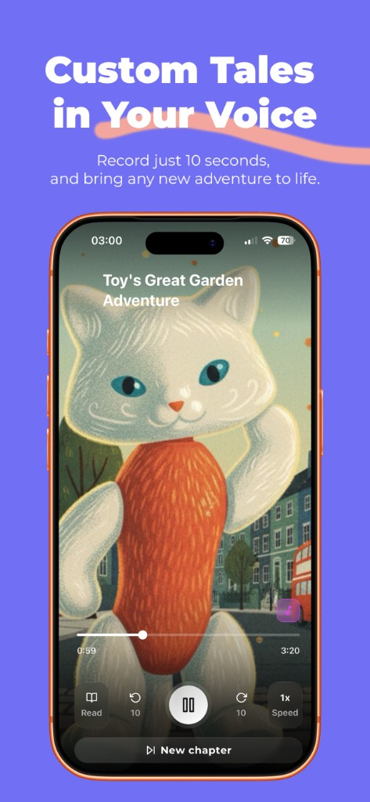
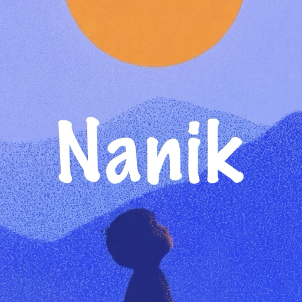
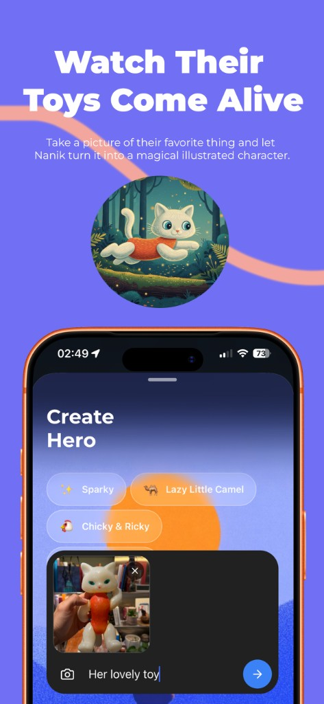
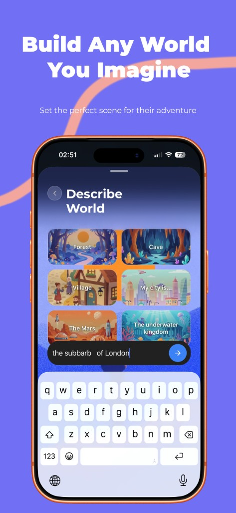
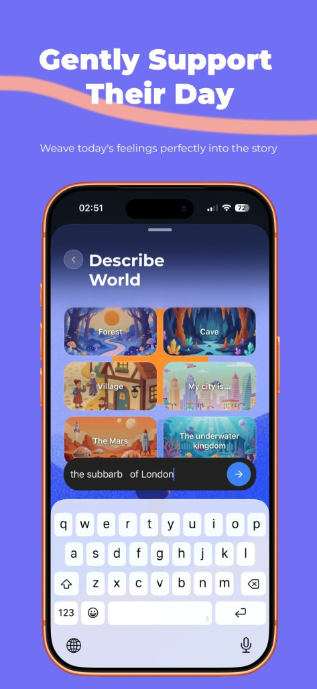
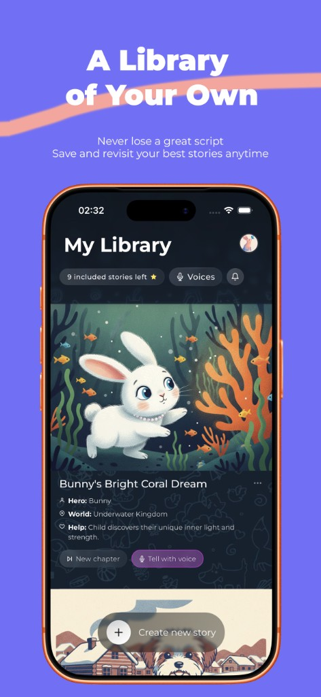
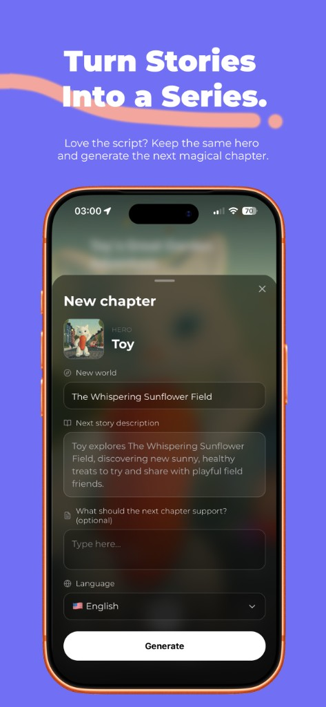

Custom tales in your voice
Record about 10 seconds once. Nanik narrates new adventures so your child hears a familiar voice, even when you’re busy or away.


Describe a hero, or snap a photo of a beloved toy, and Nanik writes a warm story, illustrates it, and reads it aloud. Made for parents. Loved at bedtime.
Record about 10 seconds once. Nanik narrates new adventures so your child hears a familiar voice, even when you’re busy or away.

Take a picture of their favorite toy or object. Nanik turns it into a magical illustrated character that stars in the story.

Pick Forest, Cave, Village, city, Mars, underwater, or type your own place. Set the perfect scene for their adventure.

Weave today’s feelings into the story: calm, courage, healthy habits, or whatever your child needs tonight.

Every story stays in My Library, with hero, world, and what the story supports. Replay anytime, or tell it with voice.

Love the script? Keep the same hero and generate the next chapter: new world, new description, same beloved character.

Free to try. Nanik Plus unlocks more stories and voice clones each month.
Download demo version (iOS)